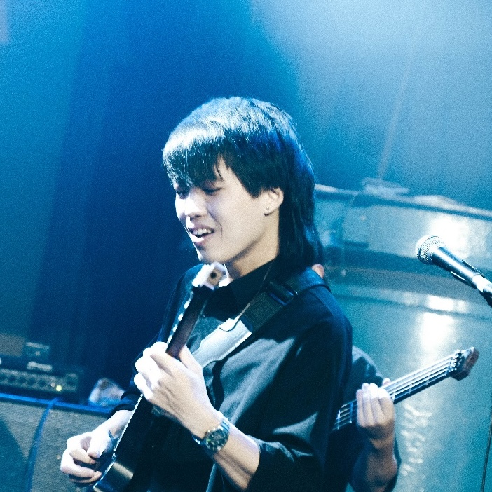

Music AI · Machine Learning · Music Technology
Yuan-Chiao (Barry) Cheng 鄭元僑
I'm a music AI researcher with 8 years of audio ML research and development experience in industry, and a guitarist and songwriter. I'm starting a Master in Music Technology at the Georgia Institute of Technology in Fall 2026.
About
I work on machine learning for music and audio. My background spans music information retrieval, representation learning, and audio effects modeling, with eight years of industry experience shipping audio ML to commercial products.
At Georgia Tech I'm broadening my research into music technology more generally: music generation, music understanding, and human and AI creative interaction. The thread I want to pull on is the same one that drew me in originally, which is building tools that meet musicians where they actually work.
Outside research, I write and play guitar in Diving Raccoon.
News
-
Two new singles & tour with Diving Raccoon
Releasing two singles and heading out on tour with my band Diving Raccoon. Dates and venues to be announced.
-
Invited as a reviewer for ISMIR 2026
Joining the review committee for the 27th International Society for Music Information Retrieval Conference, held in Abu Dhabi, UAE, November 8–12, 2026. View invitation
-
Accepted to Georgia Tech's Music Technology M.S. program
Admitted to the Music Technology Master's program at the Georgia Institute of Technology for the Fall 2026 semester. View admission letter
Selected Publications
-
DDSP Guitar Amp: Interpretable Guitar Amplifier Modeling
-
Towards Zero-Shot Amplifier Modeling: One-to-Many Amplifier Modeling via Tone Embedding Control
Full list on Google Scholar.
Experience
-
Senior Machine Learning Engineer
Positive Grid · Taipei, Taiwan
Sep 2020 – Present
- Developed the foundational Tone Embedding model for electric guitar sound, the basis for advanced tone analysis and customization.
- Designed a zero-shot guitar amplifier modeling system that simulates diverse amplifiers without additional training data.
- Built a music source separation model that outperforms state-of-the-art methods on guitar tracks.
- Led Smart Jam, a real-time, user-interactive, symbolic-based music generation app, driving user engagement.
- Integrated ML models into mobile and desktop platforms; deployed 5+ models to production services.
-
Machine Learning Engineer
Intelligo Technology Inc. · Taipei, Taiwan
Apr 2018 – Jul 2020
- Developed speech enhancement and automatic speech recognition (ASR) models.
- Implemented audio ML models on embedded systems.
Education
-
M.S. Music Technology
Georgia Institute of Technology · Starting Fall 2026
-
M.S. Photonics and Optoelectronics
National Taiwan University · 2015 – 2017
-
B.S. Physics
National Taiwan University · 2011 – 2015
Music
I write and play guitar in Diving Raccoon. Listen on Spotify, and catch us on tour later this year.
Get in touch
For research, collaboration, or shows, drop me a line.